Abraham Lincolnwiki-fr
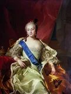
Elizabeth Irewiki-fr Napoléonmemo:rois_france
Napoléonmemo:rois_france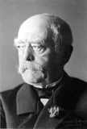
Otto von Bismarckwiki-fr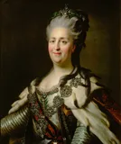
Catherine IIwiki-fr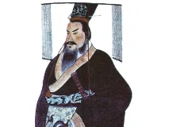
Qin Shi Huangwiki-fr Cléopâtrewiki-fr
Cléopâtrewiki-fr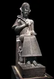
Ramsès IIwiki-fr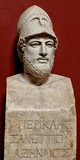
Périclèswiki-fr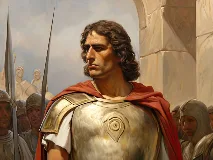
Alexandre le Grandwiki-fr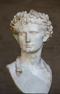
Augustewiki-fr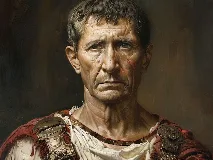
Trajanwiki-fr Gandhiwiki-fr
Gandhiwiki-fr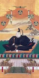
Tokugawa Ieyasuwiki-fr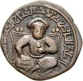
Saladinwiki-fr Darius Ierwiki-fr
Darius Ierwiki-fr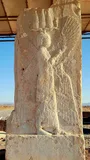
Cyrus le Grandwiki-fr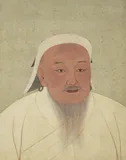
Gengis Khanwiki-fr Moctezuma Ierwiki-fr
Moctezuma Ierwiki-fr Pachacutiwiki-fr
Pachacutiwiki-fr Pacal le Grandbing
Pacal le Grandbing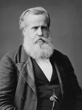
Pedro IIwiki-fr
Askia Mohammedwiki-fr
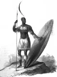
Shakawiki-fr Haïlé Sélassiéwiki-fr
Haïlé Sélassiéwiki-fr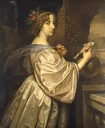
Christine de Suèdewiki-fr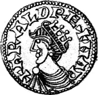
Harald Hardradawiki-fr Harald à la Dent bleuewiki-fr
Harald à la Dent bleuewiki-fr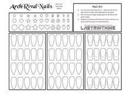
Guillaume d'Orangebing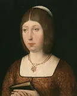
Isabelle Irewiki-fr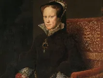
Marie Irebing Casimir IIIwiki-fr
Casimir IIIwiki-fr Soliman le Magnifiquewiki-fr
Soliman le Magnifiquewiki-fr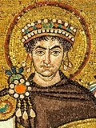
Justinien Ierwiki-fr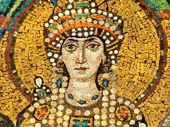
Théodorawiki-fr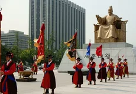
Sejong le Grandwiki-fr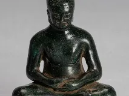
Jayavarman VIIwiki-fr
Amanitorewiki-fr
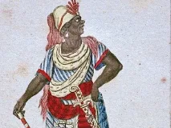
Mvemba a Nzingawiki-fr Robert Ier d'Ecossememo:rois_france
Robert Ier d'Ecossememo:rois_france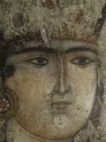
Tamar de Géorgiewiki-fr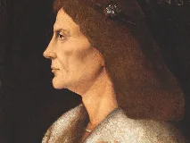
Matthias Corvinwiki-fr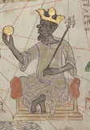
Mansa Moussawiki-fr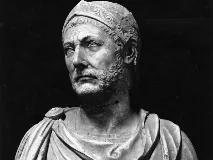
Hannibal Barcawiki-fr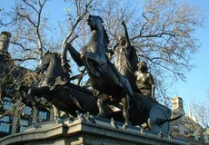
Boadicéewiki-fr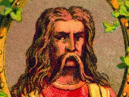
Vercingétorixwiki-fr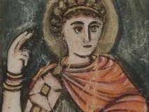
Didonwiki-fr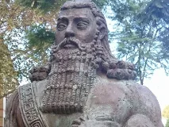
Gilgameshimposée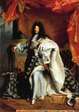
Louis XIVwiki-fr Charlemagnememo:rois_france
Charlemagnememo:rois_france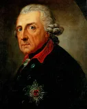
Frédéric II le Grandwiki-fr Pierre le Grandwiki-fr
Pierre le Grandwiki-fr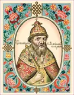
Ivan le Terriblewiki-fr Marie-Thérèse d'Autrichewiki-fr
Marie-Thérèse d'Autrichewiki-fr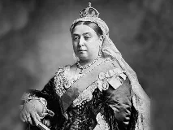
Victoriabing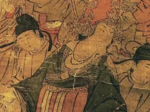
Wu Zetianwiki-fr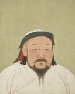
Kubilai Khanwiki-fr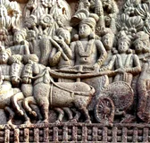
Ashokawiki-fr Akbarwiki-fr
Akbarwiki-fr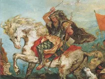
Attilawiki-fr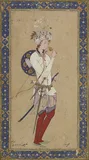
Harun al-Rashidwiki-fr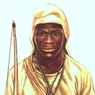
Sundiata Keïtaimposée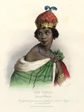
Ana de Sousa Nzinga Mbandewiki-fr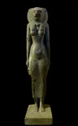
Piyewiki-fr Simón Bolívarwiki-fr
Simón Bolívarwiki-fr Tecumsehwiki-fr
Tecumsehwiki-fr Kamehameha Ierwiki-fr
Kamehameha Ierwiki-fr